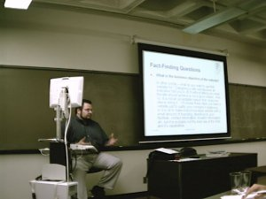

|
 |
 |
|
 |
 |
11/21/2002
Chris Hayes, a web designer from SSE, gave an informative speech about
designing web sites. According to Chris, a good website is a website that is
usable, accessible and achieves the business objective for creating the website.
Most websites failed because there is not enough of a discovery phase before any
work is done. He further stated that most clients rely on the web designers to
tell them how they can use the web to enhance their day to day business.
Therefore, it is important that the web designers ask the right questions to get
the real answers.

In order to design a good website, we have to know the company's business
objective, target audience, overall message, and get involved in initial client
meetings. Chris also spoke about some good design techniques such as placing
name, logo, headlines and and page titles on every page. He also recommended
some useful web design books such as Web Style Guide by Yale University Press
and Web Redesign by Kelly Goto.
To get more information about Chris's presentation, here is Chris's
Power Point Presentation.
Chris sharing his Web Design knowledge with an ISPC member.
Chris and our ISPC president.
|
 |
 |